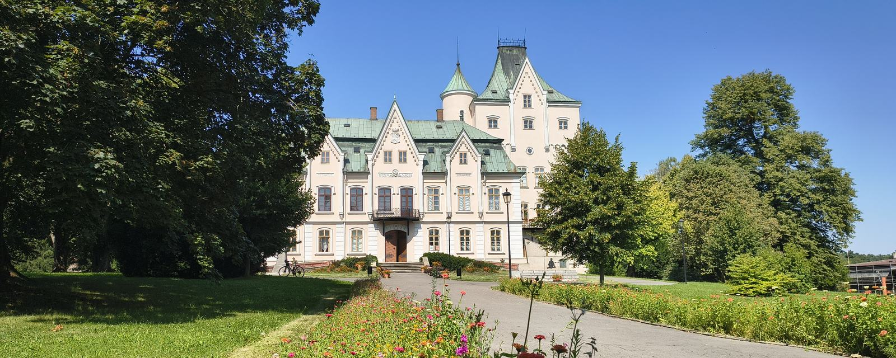

.jpg){kind=link}
Dětská skupina – nové místo, kde se postarají o malé děti
Dvě skupiny po 18 dětech, platí se stejně jako ve školce. Dotace 35,8 milionu z evropského Národního plánu obnovy.
Zdroj
Studénka · stav k 29. září 2026
Přehled toho, jak město hospodaří, co postavilo, co staví a co plánuje.
Město hospodaří podobně jako okolní města a menší akce se daří dokončovat. Velké akce se ale odkládají, dluh je vysoký hlavně kvůli splátkám za úsporné osvětlení a solární panely a obyvatel ubývá rychleji než v okolí.
Dluh odpovídá 74 % průměrného ročního příjmu města. Většinu tvoří splátky za úsporné osvětlení a solární panely (EPC). Bez nich by to bylo 23 %.
InvesticePrůměr okolí21 %všech výdajů jde na nové stavby a opravy (průměr 2022–2025).
Investice z dotacíPrůměr okolí15 %investic zaplatily dotace od státu, kraje a EU. Zbytek platí město samo nebo na úvěr.
Počet obyvatelUbývá nejvíc v okolí−9 %od roku 2011. Má to dva zhruba stejně velké důvody: víc lidí umírá, než se rodí, a víc lidí se odstěhuje, než přistěhuje.
Co lidé chtěliVětšina se zlepšuje9 z 13oblastí, které lidé v průzkumu 2018 chtěli zlepšit, se zlepšuje (2 výrazně, 7 zčásti). U 4 se skoro nic nestalo.
Akční plán 2025–2026Odkládá se5 z 10největších plánovaných akcí se odkládá, 1 byla zrušena. 2 jsou hotové, 2 probíhají.
Dluh: 74 % za rok 2025 uvádí město v komentáři k rozpočtu 2026 (včetně EPC); náš výpočet z Monitoru vychází 72 %, rozpis je v sekci Jak se hospodaření vyvíjí. Srovnání s okolím: průměr let 2022–2025 z Monitoru státní pokladny; počty obyvatel tamtéž (od sčítání 2011). Co lidé chtěli: 13 oblastí z průzkumu 2018 (a dotazníku 2014, demografické studie 2018) porovnaných s tím, co se udělalo – rozpis je v sekci níže. Plány: všech 10 akcí za víc než 10 mil. Kč z akčního plánu 2025–2026, porovnaných s rozpočtem 2026 a zprávami města – rozpis je v sekci Plní město své plány?
Jen větší akce města začaté od voleb v říjnu 2022 a to, co chystá. Bez starších akcí, běžné údržby a staveb státu či kraje.
Akce, které se začaly i dokončily v tomto volebním období (od října 2022). Nejdřív ty nejzajímavější:
Dvě skupiny po 18 dětech, platí se stejně jako ve školce. Dotace 35,8 milionu z evropského Národního plánu obnovy.
ZdrojSplácí se do roku 2035. Dodavatel smluvně ručí za to, kolik město ušetří na energiích. Na solární panely (35,8 mil. Kč) získalo město dotaci 7,1 milionu.
ZdrojPoplatek za odpad je 960 Kč na osobu (2026), v roce 2023 byl 720 Kč. I tak poplatky v roce 2024 pokryly jen 55 % nákladů na odpad a třídilo se 47 % odpadu (zákon od roku 2025 chce 60 %).
ZdrojMěsto opravuje šatny postupně. Zbytek přijde na řadu v dalších letech.
ZdrojNové rozvody a sociální zázemí družin; družinu na Sjednocení z velké části zaplatila EU. V roce 2026 pokračuje další etapa, také z evropské dotace.
ZdrojFirma, která pro město dělala zimní údržbu, na konci roku 2023 vypověděla smlouvu. Město proto od roku 2024 uklízí a udržuje silnice samo a koupilo si na to stroje.
ZdrojRestaurovaný sál s legionářskými malbami, ve spolupráci s Československou obcí legionářskou.
ZdrojZastřešené posezení, informační tabule a stojan na kola. Dotace pokryla 0,25 milionu.
ZdrojČástka postupně roste (2020: 200 tis. Kč). Vyhrály např. lanová dráha (2023), rozšíření hřiště na Lidické (2025) a psí hřiště na Tovární (2026).
ZdrojPráce běží, brzy bude hotovo. Nejdřív ty nejzajímavější:
Původně se měla dělat už v roce 2025. Staví firma EUROVIA. Smlouva zněla na 11,1 mil. Kč, dodatkem v červenci 2026 se cena zvýšila.
ZdrojPříjezdová cesta se dodatky ke smlouvě prodražila z 6,0 na 8,0 mil. Kč. Obřadní síň zdržují okna. Z dotací přišly jen 3 miliony. Síň se poprvé použije 5. listopadu na první zasedání nového zastupitelstva, od roku 2027 v ní budou svatby.
Zdroj17 nových míst u zimního stadionu, z toho 2 pro vozíčkáře. Je to zároveň první krok k nové sportovní hale.
ZdrojMost u kříže. Smlouva s firmou je podepsaná od srpna 2026.
ZdrojPokračování oprav, které ve školách běží po etapách.
ZdrojMěsto prodává 7 zasíťovaných pozemků na rodinné domy. 4 už jsou prodané.
ZdrojMělo se to dělat, ale něco to zastavilo.
Vzhled kašny vybrali lidé v anketě v roce 2022. Do soutěže na stavbu se přihlásila jediná firma. Smlouvu podepsala, ale do konce září 2026 vůbec nezačala a chce víc času. Město to odmítlo. Firmě ale ještě běží lhůta na dokončení, takže od smlouvy zatím odstoupit nemůže.
ZdrojČást se postavila spolu s chodníkem na Butovické (2022). Na zbytek město dotaci dostalo, ale zastupitelé ji odmítli: podmínky na 10 let by znamenaly výrazně dražší stočné pro všechny. Stavba počká na výhodnější dotaci.
ZdrojV plánech rozvoje je od roku 2015. I nejlevnější nabídka byla nad rozpočtem, a tak se město vzdalo úvěru i dotace 19,9 milionu. Chce se k tomu vrátit.
ZdrojMěsto to má naplánované na příští rok.
Je to v plánech města, ale chybí peníze nebo příprava. Nemusí se to stihnout do roku 2030. Nejdřív ty nejzajímavější:
Nová parkovací místa u zimního stadionu jsou první krok. Na samotnou halu peníze nejsou. Město v roce 2024 žádalo o státní dotaci až 90 mil. Kč, výsledek jsme nenašli.
ZdrojMěsto připravuje projekt a pak bude shánět peníze. Dotaci 1,1 mil. Kč na projekt z Národního plánu obnovy zastupitelé v roce 2024 nepřijali. Město samo odhaduje začátek stavby nejdříve v roce 2027.
ZdrojV každém plánu rozvoje od roku 2015, pokaždé za 7 mil. Kč. Nejdřív se musí vyřešit, komu patří pozemky pod stezkou. Dotaci 372 500 Kč na projekt zastupitelé v prosinci 2024 rozhodli vrátit, protože se nesplnily podmínky. Projektant nedodržel termín a město po něm žádalo smluvní pokutu.
ZdrojProjektová dokumentace je hotová. Stavba je ale velmi drahá a bez velké dotace na ni město nemá.
ZdrojNa kompostárnu město v září 2025 požádalo o dotaci 7 mil. Kč a v srpnu 2026 objednalo projekt. Re-use centrum, kam by lidé mohli nosit věci k dalšímu použití, slíbilo vedení města v roce 2023 jako bod volebního programu. Zatím nevzniklo.
ZdrojKraj v roce 2026 daroval městu 1,4 km ulice Butovické i s kruhovým objezdem. Silnice je ve špatném stavu, kvůli tomu je od srpna 2025 zrušená zastávka Vagonka hl. vrátnice. Opravy teď bude platit město.
ZdrojProjekt město objednalo v říjnu 2025. Termín stavby ani cena zatím nejsou známé.
ZdrojStudie z roku 2024 navrhla asi 210 nových míst. Z toho 117 na Poštovní město po odporu obyvatel zrušilo. V říjnu a listopadu 2026 přibude 11 míst v Butovicích, na řadě je Budovatelská (51 míst) a Butovická (42). Pro parkoviště U Rybníčku se objednává projekt. Novější studie sídliště (2025) navrhuje 320–386 míst.
ZdrojMěsto areál převzalo od sportovního klubu v letech 2023–2024. Studie navrhuje tribunu pro 300 diváků, atletický ovál, hřiště s umělou trávou, skatepark a dopravní hřiště. Projekt za 4,2 mil. Kč má být hotový do 30. 4. 2027. Peníze na stavbu zatím nejsou.
ZdrojStudie z listopadu 2025 rozdělila sídliště do 6 etap: nová parkoviště, chodníky a pěšiny, dětská a sportovní hřiště, workout, psí louky, lavičky, sušáky a nové stromy. 1. etapou měla být parkoviště na Poštovní, která město zrušilo. Na stavbu zatím nejsou peníze.
ZdrojV plánech rozvoje od roku 2015. Záleží na tom, jestli město dostane dotaci.
ZdrojČást školy se zateplila v letech 2018–2019. Na zbytek nejsou v rozpočtu 2026 peníze.
ZdrojMalá část se opravila v roce 2020 (0,25 mil. Kč). Velká obnova je v plánu na roky 2025–2026, ale zatím se nezačalo.
ZdrojZateplení, nová okna a vchod už proběhly v roce 2018 (cca 14 mil. Kč). Další oprava je v plánech rozvoje od roku 2015, ale na letošek na ni nebyly peníze.
ZdrojZámek se opravuje po kouscích už několik let. Teď se chystá projekt na další část.
ZdrojMěsto chce požádat o evropskou dotaci.
ZdrojV roce 2025 přibyla urnová místa a kolumbárium v Butovicích (3,1 mil. Kč). Na další rozšíření letos nebyly peníze.
ZdrojJsou v plánu, ale ještě nemají přidělené peníze.
ZdrojMalé akce, přechody jsou v plánech rozvoje od roku 2015. Zastávka u Lidlu dnes stojí jen na jedné straně silnice – plán se nejspíš týká té druhé.
ZdrojJe to jen napsané v plánech. V příštích čtyřech letech to spíš nečekejte. Nejdřív ty nejzajímavější:
Obrovský areál bývalé továrny na železniční vagony. Program rozvoje města ho označuje za hlavní příležitost, konkrétní plán pro něj ale město nemá.
ZdrojCharita v roce 2026 rozšířila domov pro seniory a město přispívá na jeho provoz. Denní centrum, kam by senioři chodili přes den, ve městě chybí. Město počítá s tím, že ho postaví někdo jiný.
ZdrojV plánech rozvoje od roku 2015, zatím se nestavělo.
ZdrojJen v seznamu přání do roku 2029.
ZdrojJen v seznamu přání do roku 2029.
ZdrojNejdřív musí stát dokončit pozemkové úpravy (nové uspořádání polí a polních cest), které teprve začínají.
ZdrojMěstské bytové domy. Zatím jen v plánu, bez peněz.
ZdrojKaždé dva roky schvalují zastupitelé akční plán: seznam akcí, které chce město v dalších letech udělat, s odhadem ceny. Aktuální plán schválili v září 2024 na roky 2025–2026. Níže je všech 10 akcí z něj, které mají stát víc než 10 mil. Kč, a jejich stav k září 2026.
| Akce | Cena v plánu (mil. Kč) | Stav |
|---|---|---|
| Sportovní hala Na stavbu nejsou peníze, město čeká na státní dotaci. | 151,7 | Odloženo |
| Úsporné veřejné osvětlení (EPC) Hlavní část hotová v roce 2025. | 94,9 | Hotovo |
| Oprava Dělnického domu Zrušeno v roce 2023, v plánu ale zůstalo. | 72,0 | Zrušeno |
| Dětská skupina Otevřena v červnu 2026, stála 41 mil. Kč. | 52,0 | Hotovo |
| Zateplení ZŠ Sjednocení (zbytek) V rozpočtu 2026 na to nejsou peníze. | 52,0 | Odloženo |
| Kompostárna Projekt se zpracovává, o dotaci město požádalo v roce 2025. | 30,0 | Připravuje se |
| Šatny na zimním stadionu Opravuje se postupně, hotovo 5 z 15 šaten. | 18,0 | Probíhá |
| Nové zahrady školek Zatím se nezačalo. | 15,0 | Odloženo |
| Kanalizace v Butovicích (3. etapa) Dotaci zastupitelé odmítli kvůli dopadu na stočné. | 13,7 | Odloženo |
| Nová kuchyně v ZŠ Butovická V plánu od roku 2022; v rozpočtu 2026 jen 0,4 mil. Kč na projekt. | 13,0 | Odloženo |
Odložené akce mají v plánu cenu dohromady 245 mil. Kč. „Odloženo“ znamená, že v rozpočtu na rok 2026 nejsou peníze na stavbu, takže se do konce plánu nestihne. Nový akční plán na roky 2026–2028 zastupitelé schválili 3. 9. 2026, zatím ale není zveřejněný. Zdroj: akční plán 2025–2026, rozpočet 2026.
Těchto 9 akcí je ve všech šesti akčních plánech od roku 2015. Pokaždé se přesunuly na další období.
| Akce | Cena 2015 (mil. Kč) | Cena 2025 (mil. Kč) | Stav 2026 |
|---|---|---|---|
| Oprava Dělnického domu | 15 | 72 | Zrušeno 2023, v plánu zůstává |
| Oprava radnice | 38,9 | 20 | Zateplení 2018, zbytek bez peněz |
| Zateplení ZŠ Sjednocení | 30 | 52 | Část hotová 2019, zbytek odložen |
| Kanalizace v Butovicích (3. etapa) | 13 | 13,7 | Dotace odmítnuta, odloženo |
| Zateplení školek Butovická a Komenského | 5,6 | 11 | Bez peněz |
| Cyklostezka do Albrechtiček | 7 | 7 | Nevyřešené pozemky |
| Silnice na Panské | 0,65 | 2,4 | Bez peněz |
| Přechody na ulici 2. května | 0,8 | 0,8 | Přesunuto do seznamu přání 2024–2029 |
| Příjezdová cesta k Novému zámku | 1,2 | 4,6 (skutečně 8) | Staví se v roce 2026 |
Zdroje: Program rozvoje města 2015, akční plány 2017–2018, 2019–2020, 2021–2022, 2023–2024, 2025–2026.
Na přelomu let 2018 a 2019 nechalo město udělat a představit průzkum mezi obyvateli (299 osobních rozhovorů) a demografickou studii. Celková spokojenost byla 69 % – nejméně ze srovnávaných měst. Porovnali jsme, co lidé tehdy chtěli, s tím, co se od té doby udělalo.
35 dokončených projektů za 273 mil. Kč, podle přehledu města (stav 6/2024). Opravy zámku a EPC se platily mimo tento plán.
Sport, na který si lidé nejvíc stěžovali, dostal téměř polovinu peněz. Na sociální služby a zdravotnictví nešel z plánu rozvoje žádný projekt, na kulturu jen vybavení na letní akce (0,1 mil. Kč), přestože je plán z roku 2015 i průzkum 2018 uvádějí jako slabá místa. Plán rozvoje je jediná ucelená strategie města a jeho období („2014–2020 (2025)“) už skončilo; od té doby město schvaluje jen dvouleté akční plány (viz Plní město své plány?).
| Co lidé chtěli | Co se stalo | Stav |
|---|---|---|
| Silnice a chodníky Spokojenost 54 %. | Nové chodníky na Butovické, L. Janáčka a 2. května, nová ulice Družstevní, silnice Na Trávníkách. | ✓ Děje se |
| Čistota a zeleň Spokojenost s čistotou 63 %, se zelení 66 %. | Obnova zeleně (2015–2020), nové stroje pro úklid, svoz tříděného odpadu od domů. | ✓ Děje se |
| Parkování Spokojenost 42 %, nejmenší ze všech oblastí. I v anketě o sídlišti 2025 lidem vadilo nejvíc. | Parkoviště za úřadem (2020, 94 míst). Studie 2024 navrhla asi 210 nových míst, z toho 117 na Poštovní město po odporu obyvatel zrušilo. V roce 2026 přibude 28 míst u stadionu a v Butovicích, další se připravují. | ~ Zčásti |
| Sport Spokojenost 50 % a nejvíc stížností. Halu chtělo 39 % lidí, obnovu letního stadionu 37 %. | Do sportu šlo nejvíc peněz – 128 mil. Kč (koupaliště a biotop, zimní stadion, bazén, hřiště u škol). Hala, kterou lidé chtěli nejvíc, zatím nemá peníze. | ~ Zčásti |
| Cyklostezky Nejžádanější nová stavba: chtělo ji 47 % lidí. | Dvě nové cyklostezky: ve Studénce a do Nové Horky (2020–2021). Stezka do Albrechtiček se zasekla – dotace na projekt musela být vrácena. | ~ Zčásti |
| Kultura a volný čas Spokojenost 55 %. Kulturní dům ve staré škole na Tovární chtělo 36 % lidí. | Obnova Nového zámku a legionářská místnost. Oprava Dělnického domu zrušena. | ~ Zčásti |
| Péče o seniory Demografická studie: do 2032 bude potřeba asi 57 míst v domově pro seniory, bylo 18. Chybí denní stacionář a odlehčovací služba. | Charita v roce 2026 otevřela nový domov (18 míst + 5 odlehčovacích), s dotací od státu. Město platí část jeho provozní ztráty (asi 1,2 mil. Kč na rok 2026). Město samo domov pro seniory jen zvažuje; denní stacionář zatím není. | ~ Zčásti |
| Dětská hřiště Spokojenost 50 %. | Nové herní prvky (2025), projekty z participativního rozpočtu. Studie sídliště (2025) navrhuje nová hřiště ve všech 6 etapách – zatím bez peněz. | ~ Zčásti |
| Bydlení V dotazníku 2014 nejdůležitější oblast (62 %). Byty pro mladé chtělo 48 % lidí. | 7 pozemků pro rodinné domy v Nové Horce. V roce 2025 město prodalo firmě pozemek v Butovicích (8,4 mil. Kč) s podmínkou, že do 5 let postaví dva bytové domy. Městský dům s nájemními byty zatím bez peněz. | ~ Zčásti |
| Bezpečnost V roce 2018 jedna ze silných stránek města. | Městská policie má od roku 2024 méně strážníků a nezvládá nepřetržitou službu. Přes den obvykle slouží jeden strážník (starosta, 6/2026). | ✕ Zhoršuje se |
| Zdravotní služby Spokojenost 65 %. Lidé psali, že je tu jen jeden zubař a zdravotní středisko nemá výtah. | Rada v květnu 2026 doporučila koupit zdravotní středisko v Butovicích za 10 mil. Kč, zastupitelstvo to zatím neschválilo. Oční lékařka ve zdravotním středisku skončila k 25. 9. 2026. | ✕ Skoro nic |
| Práce a zaměstnanost Spokojenost s nabídkou práce 54 %. Program rozvoje označil areál bývalé Vagonky za hlavní příležitost města. | Pro areál Vagonky město plán nemá. Akční plán sice uvádí „řešení nezaměstnanosti“ a „podporu místních podnikatelů“, ale bez konkrétních akcí a peněz. Poslední projekt veřejně prospěšných prací město zveřejnilo v roce 2014. Nepřímo pomáhá dětská skupina: rodiče malých dětí se díky ní můžou vrátit do práce. | ✕ Skoro nic |
| Úbytek obyvatel Studie 2018: lidí ubývá hlavně proto, že se odstěhují. | Mnoho lidí tu bydlí bez trvalého pobytu. V roce 2025 jim město nabídlo 2 100 Kč, když se přihlásí. Přihlásilo se 59 lidí. Jiný krok proti úbytku jsme nenašli. Obyvatel ubývá dál, rychleji než v okolních městech. | ✕ Skoro nic |
Spokojenost = podíl spokojených lidí v průzkumu 2018. Zdroje: průzkum a demografická studie 2018, přehled projektů plánu rozvoje 2015–2024, Program rozvoje města 2015 s dotazníkem 2014, plán sociálních služeb 2023–2025, TV Polar. Průzkum je z roku 2018. Město dělalo ankety i v letech 2023 a 2025, ucelené výsledky ale nezveřejnilo. Školy mají podle studie 2018 kapacity dost. Ve školkách podle města chyběla místa hlavně pro dvouleté děti, proto vznikla dětská skupina.
Témata dotazů v rubrice Starosta odpovídá od listopadu 2022 do září 2026 (56 dotazů, počty jsou přibližné).
| Téma | Dotazů | Například |
|---|---|---|
| Silnice, chodníky, příjezdy ke garážím | 10 | Družstevní, Mírová, garáže u Kmínku, cesta na Radar |
| Zeleň, stromy, potoky | 6 | sečení trávy, stromy na A. G. L. Svobody, čištění potoka |
| Rychlost aut, kamiony, bezpečnost dopravy | 6 | radar na rychlost, kamiony na 2. května, objížďky kvůli podjezdu |
| Parkování | 5 | sídliště, nádraží, zdravotní středisko, obchody |
| Autobusy, vlaky, sdílená kola | 4 | jízdní řády, zastávka u Kotvice |
| Odpady a poplatky | 4 | re-use centrum, kompostárna, placení poplatků |
| Pořádek a sousedské spory | 4 | krádeže kol u nádraží, problémový nájemník |
| Kašna, bydlení, zimní údržba | po 2 | |
| Ostatní | asi 11 | výpadky proudu, koupaliště, web a portál občana |
Seznam Zprávy v září 2026 zveřejnily dva žebříčky portálu Evropa v datech. Hodnotí se v nich 206 správních obvodů (obcí s rozšířenou působností), ne jednotlivá města. Studénka patří do obvodu Bílovec a je v něm největším městem. Čísla tedy platí pro Studénku, Bílovec a okolní obce dohromady. Hodně z toho, co se měří (lékaři, práce, obchody), město ovlivní jen zčásti.
Měří zdraví, práci a vztahy (délka života, lékaři, bydlení, práce, školy, spolky, stěhování mladých…). Obvod Bílovec se v nejnovějším hodnocení posunul na 59. místo z 206, v letech 2018–2024 byl kolem 120. místa. Ze sousedních obvodů je nejvýš.
| Obvod | Pořadí teď (1. = nejlepší) | 2018–2024 |
|---|---|---|
| Bílovec (vč. Studénky) | 59. | 93.–136. |
| Opava | 129. | 109.–152. |
| Odry | 134. | 157.–199. |
| Nový Jičín | 156. | 113.–173. |
| Frenštát p. R. | 164. | 99.–152. |
| Kopřivnice | 168. | 176.–192. |
| Ostrava | 173. | 136.–175. |
Měří sedm oblastí ze 49 ukazatelů. Obvod Bílovec je celkově 148. z 206. Níže je, jak si vede v jednotlivých oblastech, a co z této stránky s nimi souvisí.
| Oblast a co s ní souvisí ve Studénce | Pořadí (1. = nejlepší) |
|---|---|
| Dostupnost péče Měří se: praktici, dětští lékaři, zubaři, lékárny, sociální služby. Zdravotní středisko bez výtahu, koupi zastupitelstvo neschválilo; oční lékařka skončila v září 2026; denní stacionář pro seniory chybí. Pomohla dětská skupina a rozšířený domov pro seniory Charity. | 191. |
| Volný čas Měří se: divadla, kina, knihovny, muzea, turistické cíle. Oprava Dělnického domu zrušena; obnova letního stadionu a nová výstava v muzeu jsou jen v plánu. Odpočívadla pro turisty jsou hotová, obřadní síň na Novém zámku má být hotová v říjnu. | 186. |
| Ekonomika Měří se: nezaměstnanost, podnikání, dostupnost bydlení, příjmy obce. Pro areál bývalé Vagonky město plán nemá; městský dům s nájemními byty je bez peněz. Město prodalo pozemek na dva soukromé bytové domy a prodává 7 pozemků v Nové Horce. | 176. |
| Vzdělávání Měří se: vybavení a výsledky škol, peníze na žáka. Opravy rozvodů a družin ve školách, nové učebny (2024–2026). | 139. |
| Demografie Měří se: naděje dožití, věk, vzdělání obyvatel. | 71. |
| Prostředí pro život Měří se: zeleň, kriminalita, odpady. | 68. |
| Občanská vybavenost Měří se: zastávky, obchody, internet, služby. | 49. |
| Obvod | Pořadí (1. = nejlepší) |
|---|---|
| Frenštát p. R. | 42. |
| Kopřivnice | 77. |
| Frýdek-Místek | 91. |
| Opava | 93. |
| Nový Jičín | 96. |
| Ostrava | 127. |
| Bílovec (vč. Studénky) | 148. |
| Odry | 190. |
Čím nižší číslo, tím lépe: 1. místo je nejlepší, 206. nejhorší. Zelená = horní třetina, oranžová = prostřední, červená = dolní třetina z 206 obvodů. Zdroj: Seznam Zprávy, 28. 9. 2026, data Evropa v datech.
Svislé čáry = komunální volby. Najeďte na rok pro přesná čísla.
Dluh vydělený průměrným ročním příjmem za poslední 4 roky. Tak to měří zákon, který hlídá hranici 60 %. Graf počítá i dluh za úsporné osvětlení a solární panely (EPC). Město v komentáři k rozpočtu 2026 počítá za rok 2025 se 74 %. Závěrečný účet 2025 uvádí 23 %, jen za bankovní úvěry bez EPC; podle tohoto výpočtu auditor každý rok potvrdil, že limit 60 % překročen nebyl. Audit hospodaření za roky 2022–2025 nenašel žádné chyby ani nedostatky.
Podle střednědobého výhledu (schválen 12/2024) má dluh klesnout na 28 % příjmů v roce 2030. Nové úvěry výhled nepočítá, jen krátkodobou půjčku na účtu (kontokorent) do 10 mil. Kč ročně. Nové investice kromě splátek EPC v něm nejsou. Město je schvaluje až v ročních rozpočtech. I výhled na roky 2022–2027 počítal s nulovými investicemi, ve skutečnosti šlo na investice 20–88 mil. Kč ročně.
| Za co | Kolik | Splatné do | Oblast | |
|---|---|---|---|---|
| Úspory energie se zaručeným výsledkem (EPC) nové veřejné osvětlení, solární elektrárny, úsporné osvětlení ve školách, úspory vody | 185 mil. Kč celkem (vč. DPH a úroků) | 2035 | Energie | zdroj |
| Úvěr na investice 2020–2022 chodník na Butovické, sítě pro stavební pozemky na Panské, parkoviště za úřadem (2020) a školní kuchyně (2021) | 80 mil. Kč | 2027 | Doprava, bydlení, školy | zdroj |
| Krytý bazén – stavební úpravy a přístavba | 23 mil. Kč | 2032 | Sport | zdroj |
| Chlazení zimního stadionu nová technologie chlazení ledu (půjčka SFŽP) | 20 mil. Kč | 2029 | Sport | zdroj |
| Kontokorent (krátkodobá půjčka na účtu) schválen 2/2025 u ČSOB, lze čerpat do konce 2026 | až 35 mil. Kč | 2026 | Rezerva | zdroj |
| ZŠ Sjednocení – energetická opatření zateplení a úspory energie ve škole | 25 mil. Kč | 2028 | Školy, úspory energie | zdroj |
mil. Kč · dotace často přijdou až rok či dva po stavbě
mil. Kč, bez očištění o inflaci
podíl běžných příjmů, který může jít na investice nebo splácení
| Roky | investice (mil. Kč) | z dotací (mil. Kč) | podíl dotací | dluh na konci (% příjmů) |
|---|---|---|---|---|
| 2011–2014 | 222,2 | 113,5 | 51 % | 33 % |
| 2015–2018 | 150,0 | 44,1 | 29 % | 24 % |
| 2019–2022 | 302,3 | 75,7 | 25 % | 60 % |
| 2023–2025 | 145,3 | 25,4 | 17 % | 72 % |
| Rok | příjmy | výdaje | investice | dotace na investice | dluh | na účtech |
|---|---|---|---|---|---|---|
| 2010 | 134,0 | 142,9 | 21,9 | 6,4 | 9,8 | 15,7 |
| 2011 | 182,1 | 206,9 | 101,6 | 55,1 | 31,0 | 10,8 |
| 2012 | 128,5 | 131,7 | 34,3 | 14,0 | 34,9 | 11,5 |
| 2013 | 165,4 | 167,0 | 58,6 | 31,7 | 45,8 | 13,9 |
| 2014 | 150,4 | 142,8 | 27,7 | 12,7 | 51,4 | 28,8 |
| 2015 | 158,0 | 168,4 | 42,9 | 12,0 | 59,5 | 27,5 |
| 2016 | 173,5 | 134,5 | 13,6 | 21,0 | 48,8 | 57,9 |
| 2017 | 174,0 | 154,9 | 26,2 | 3,7 | 38,8 | 68,4 |
| 2018 | 192,9 | 212,4 | 67,3 | 7,3 | 41,1 | 51,5 |
| 2019 | 226,3 | 281,4 | 103,2 | 27,7 | 72,6 | 28,9 |
| 2020 | 215,7 | 204,4 | 50,7 | 16,2 | 68,9 | 34,6 |
| 2021 | 240,5 | 239,8 | 68,4 | 23,5 | 50,0 | 16,9 |
| 2022 | 240,6 | 262,2 | 80,0 | 8,3 | 137,6 | 84,4 |
| 2023 | 269,2 | 239,9 | 38,0 | 7,7 | 110,4 | 86,7 |
| 2024 | 272,9 | 236,3 | 19,7 | 0,3 | 85,3 | 98,5 |
| 2025 | 315,5 | 326,5 | 87,5 | 17,4 | 197,2 | 89,5 |
Zdroj: Monitor státní pokladny, závěrečné účty města 2022 a 2025.
mil. Kč · najeďte na řádek pro podrobnosti
| Oblast | mil. Kč | podíl | Kč na obyvatele |
|---|---|---|---|
| Městský úřad a zastupitelé | 68,0 | 22,7 % | 7 414 |
| Školy a školky | 57,2 | 19,1 % | 6 235 |
| Byty, budovy města, osvětlení, hřbitov | 31,3 | 10,5 % | 3 417 |
| Odpady a zeleň | 27,9 | 9,3 % | 3 049 |
| Silnice, chodníky, parkoviště, autobusy | 27,3 | 9,1 % | 2 979 |
| Zimní stadion, bazén, knihovna, muzeum | 26,2 | 8,8 % | 2 864 |
| Městská policie a hasiči | 17,0 | 5,7 % | 1 853 |
| Hřiště, spolky, zámek, turisté | 12,3 | 4,1 % | 1 346 |
| Voda a kanalizace | 10,4 | 3,5 % | 1 139 |
| Splátky za úsporné osvětlení a budovy | 9,3 | 3,1 % | 1 019 |
| Úroky z dluhů a poplatky bankám | 9,0 | 3,0 % | 980 |
| Sociální služby | 3,4 | 1,1 % | 372 |
| Ostatní | 0,2 | 0,1 % | 18 |
Zdroj: položkový návrh rozpočtu 2026. „Městský úřad“ zahrnuje i práci pro stát (stavební úřad, matrika…).
2011–2026
| Rok | narodilo se | zemřelo | přistěhovalo se | odstěhovalo se |
|---|---|---|---|---|
| 2022 | 92 | 113 | 153 | 210 |
| 2023 | 70 | 115 | 134 | 159 |
| 2024 | 61 | 116 | 149 | 170 |
| 2025 | 71 | 111 | 129 | 191 |
| Celkem | o 161 víc úmrtí | o 165 víc odstěhovaných | ||
Podle evidence obyvatel města (zpravodaj, vždy únor–březen). V roce 2025 město nabídlo 2 100 Kč každému, kdo se nově přihlásí k trvalému pobytu. Přihlásilo se 59 lidí, úbytek to nezastavilo.
2022–2025
podíl běžných příjmů
podíl výdajů
| Město | zbude z běžných příjmů | investice z výdajů | investice mil. Kč/rok | dotace na investice mil. Kč/rok | podíl dotací |
|---|---|---|---|---|---|
| Fulnek | 16,8 % | 41,6 % | 102,1 | 29,7 | 29,1 % |
| Bílovec | 11,7 % | 15,0 % | 44,0 | 8,4 | 19,2 % |
| Studénka | 19,2 % | 21,2 % | 56,3 | 8,4 | 15,0 % |
| Příbor | 23,5 % | 23,6 % | 58,5 | 8,0 | 13,7 % |
| Klimkovice | 21,9 % | 22,0 % | 28,9 | 3,7 | 12,9 % |
| Nový Jičín | 14,0 % | 23,8 % | 225,6 | 24,8 | 11,0 % |
Průměr 2022–2025, zdroj: Monitor státní pokladny. Dotace se počítají v roce, kdy přišly na účet.
Po volbách 2022 vytvořily koalici Studeňáci pro Studénku (9 zastupitelů), ANO 2011 (6) a KDU-ČSL (2), tedy 17 z 21 zastupitelů. Starosta Libor Slavík a místostarosta Jiří Švagera jsou ze Studeňáků pro Studénku. V radě města zasedají další 2 radní za Studeňáky, 2 za ANO a 1 za KDU-ČSL. V opozici byly KSČM (2) a ODS+21 pro Studénku (2).
Za to, co je na této stránce, odpovídá hlavně koalice. Většinu velkých rozhodnutí (rozpočty, smlouvu na úsporné osvětlení) ale zastupitelstvo schválilo téměř jednomyslně, tedy i s hlasy opozice.
| Číslo | Strana | V letech 2022–2026 |
|---|---|---|
| 1 | Lidovci Studénka | V koalici (jako KDU-ČSL) |
| 2 | ANO 2011 | V koalici |
| 3 | Studeňáci pro Studénku | V koalici, starosta a místostarosta |
| 4 | Levice pro Studénku KSČM, Sociální demokracie, Stačilo! a nezávislí | KSČM byla v opozici |
Kandidáty a jejich programy najdete na Programy do voleb. ODS+21 pro Studénku, druhá opoziční strana, letos nekandiduje. Zdroje: výsledky voleb 2022, zvolení vedení města, hlasování zastupitelstva, pořadí stran na lístku.
Studeňáci pro Studénku mají svůj volební program z roku 2022 stále na webu. Vybrali jsme z něj všechny konkrétní sliby, které se dají ověřit, a porovnali je s dokumenty města. Obecné sliby (např. „podporovat sport“) jsme vynechali.
| Slib a co se stalo | Stav |
|---|---|
| Kompletní rekonstrukce veřejného osvětlení Nové LED osvětlení v rámci smlouvy EPC, hlavní část hotová v roce 2025. | Splněno |
| Rozšiřovat kamerový systém V roce 2023 nový kamerový bod a nové záznamové zařízení. | Splněno |
| Rekonstrukce rozvodů ve školách a školkách Opravy po etapách 2024–2026, dohromady asi 14 mil. Kč. | Splněno |
| Oplocení zahrádkářských kolonií a přístup k vodě Nádrž na vodu 2024, nové oplocení 2026. | Splněno |
| Nové herní prvky na hřištích Např. 0,55 mil. Kč v roce 2025, další 4 místa v roce 2026. | Splněno |
| Podporovat dětské skupiny Město otevřelo vlastní dětskou skupinu (červen 2026). | Splněno |
| Úspory energie, např. solární panely Solární panely na 10 městských budovách (2025). | Splněno |
| Dokončit vlastní technické služby Město uklízí a udržuje silnice samo od roku 2024. | Splněno |
| Dál získávat dotace Např. 35,8 mil. Kč na dětskou skupinu, 7,1 mil. na solární panely. | Splněno |
| Začít stavět nájemní byty a připravit pozemky pro rodinné domy Výstavba nájemních bytů nezačala. 7 pozemků v Nové Horce se prodává (zasíťovány 2022). | Zčásti |
| Projekt a postupná obnova obou zámků i zámecké zahrady Nová střecha Starého zámku, obřadní síň a cesta k Novému zámku. Zahrada zatím ne. | Zčásti |
| Budovat nová parkoviště V roce 2026 přibude 28 míst. 117 míst na Poštovní město zrušilo. | Zčásti |
| Lepší odpadové hospodářství včetně re-use centra Svoz tříděného odpadu od domů od roku 2025. Re-use centrum nevzniklo. | Zčásti |
| Postavit halu pro míčové sporty Hotové je jen parkoviště a projekt. Na stavbu město nezískalo dotaci. | Nesplněno |
| Dvoučlenné hlídky městské policie na všechny směny Od roku 2024 má policie méně strážníků, přes den obvykle slouží jeden. | Nesplněno |
| Kompletní rekonstrukce Dělnického domu Zrušeno v roce 2023. SpS uvádí, že akci zablokoval koaliční partner. Pro zrušení ale hlasovali všichni přítomní zastupitelé koalice včetně SpS. | Nesplněno |
| Výtah na zdravotním středisku Budova je soukromá. Rada v květnu 2026 doporučila středisko koupit, zastupitelstvo to neschválilo. SpS to přičítá nesouhlasu ANO. | Nesplněno |
| Denní stacionář pro seniory Nevznikl. Město přispívá na domov pro seniory, který postavila Charita. | Nesplněno |
| Kruhový objezd na přivaděči v Nové Horce Zatím jen projekt (objednán 2023). | Nesplněno |
| Cyklostezka do Albrechtiček Dotaci na projekt město vrátilo (2024), pozemky nejsou vyřešené. | Nesplněno |
Programy ANO 2011 a KDU-ČSL z roku 2022 jsme nenašli (web Programy do voleb, zpravodaj města, archiv webů). Koaliční smlouva z října 2022 společný program neobsahuje. Studeňáci pro Studénku zveřejnili i vlastní hodnocení, jak sliby splnili. V programu na rok 2026 znovu slibují re-use centrum, kruhový objezd v Nové Horce, denní stacionář, Dělnický dům, halu a zámeckou zahradu. Zdroje: program SpS 2022, hodnocení SpS, koaliční smlouva, dokumenty města uvedené u jednotlivých akcí na této stránce.
Rozbor, které dotační výzvy státu, kraje a EU odpovídají plánům města, s termíny a odkazy.